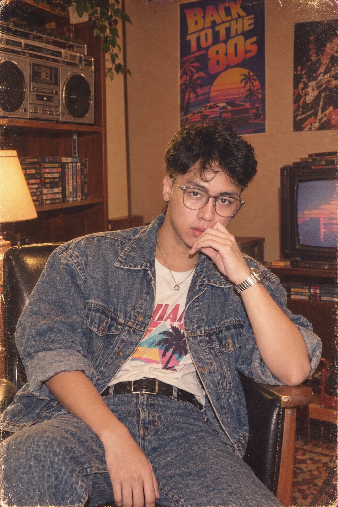
Nurjaman
Ahmad Wahdan Nurjaman
English Literature graduate with hands-on experience in Customer Support, Client Relations, and Operational Administration.
A Journey of Continuous Learning
From English Literature to Tech Support and Beyond.
I didn't start this journey with a completely clear goal. I was just trying to find a place where I could grow. My journey began with English Literature at Universitas Pasundan. For years, I studied literature, communication, writing, analysis, and various perspectives on humanity and culture. At the time, I might not have realized it, but much of what I learned eventually became an important part of my professional journey.
After graduating, my journey took me through various work environments. I worked in hospitality, served customers as a barista, supported operational and administrative activities, until finally working in customer support at a tech company. Each experience gave me a different perspective.
Hospitality taught me to understand people. Customer service taught me to listen and respond. Administration taught me to be organized and detail-oriented. Technical support taught me to look at a problem from a different angle.
In the midst of this journey, I became interested in technology. Not because I suddenly wanted to become a programmer, but because I wanted to understand how things behind the scenes could be used to make work easier and more effective. That curiosity led me to start learning Web, UI/UX, and Artificial Intelligence. I am still learning, still experimenting, and there is still much I want to understand. I don't consider myself an expert in these fields yet, and to me, that's okay. Learning is part of the journey.
Currently, I continue to develop my experience in Customer Service, Administration, Marketing, and Hospitality, while expanding my capabilities in technology as an additional skill set. I might still be figuring out where this journey will take me. But I know one thing: I enjoy the process of learning, working with others, solving problems, and turning what I've learned into something useful. And perhaps, this portfolio is just one chapter of that journey.
Background
English Literature
Current Focus
Tech Support & AI Workflows
Core Strength
Empathy + Tech Troubleshooting
Location
Cimahi, West Java
Professional & Organizational Experience
A proven track record in technical support, hospitality, operations, and leadership.
SDA Teknologi
Customer & Operational Support
- Maintained a strict under 1-minute initial response time for client tickets and communications, ensuring high SLA compliance.
- Conducted systematic troubleshooting using WHMCS, accurately logging issues and monitoring ticket progress.
- Coordinated with internal technical teams for prompt server and hosting problem resolutions.
Ticket Received
Diagnosis / WHMCS
Resolution / Escalation
Click any step above to view operational detail.
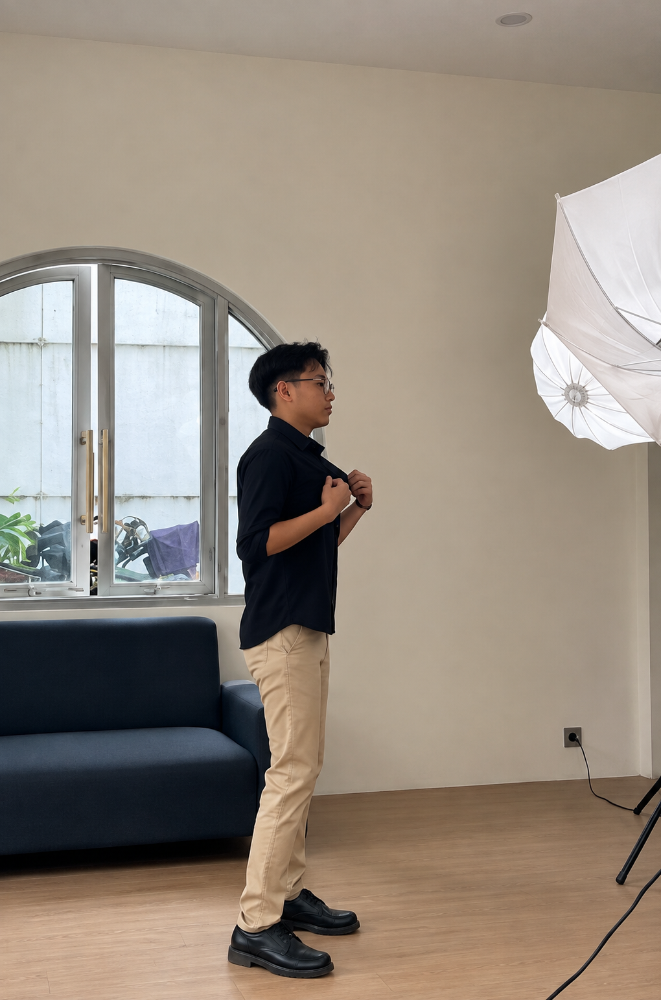
Pascalab.id
Creative Talent / Model
- Collaborated with the creative team to produce visual content (photo & video shoots) for local fashion brand marketing campaigns.
- Modeled product catalogs (lifestyle & casual wear) emphasizing consistent brand imagery.
- Worked closely with photographers and stylists to visually convey product value to the target audience.
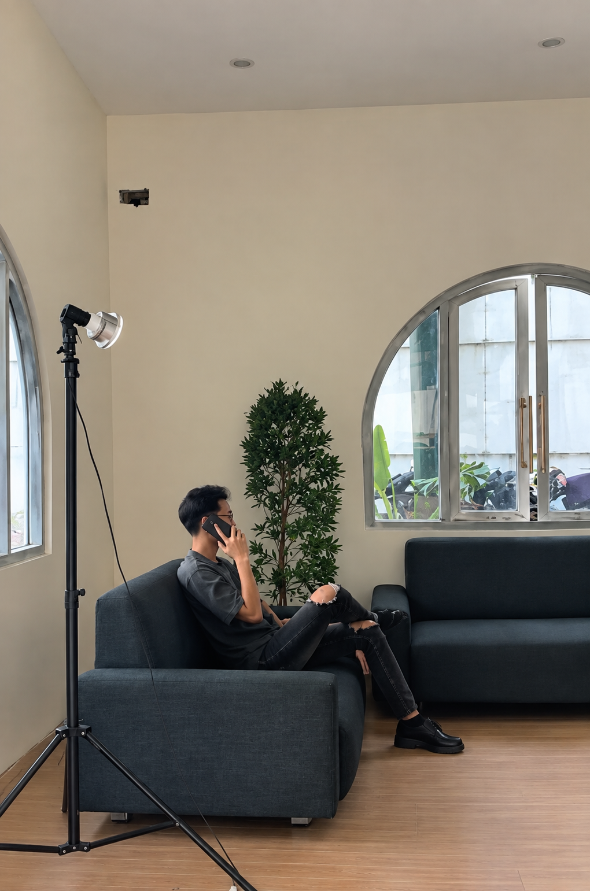
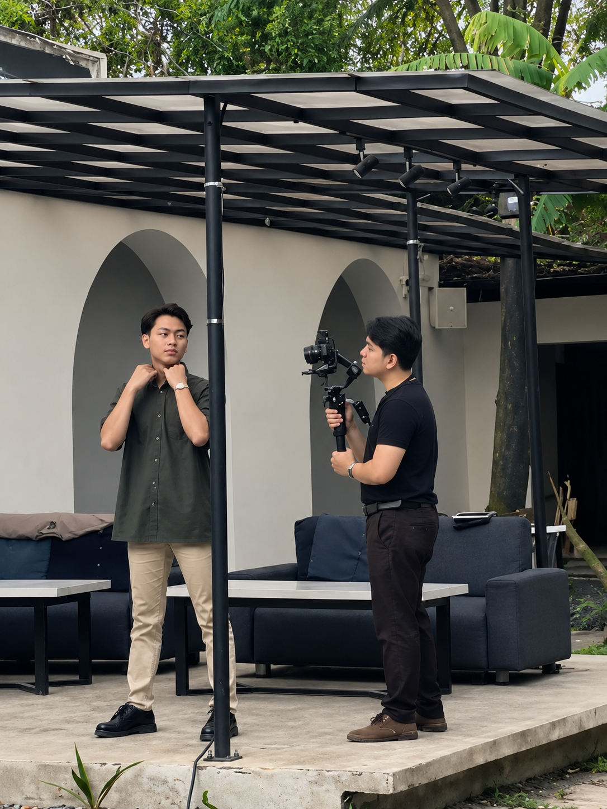
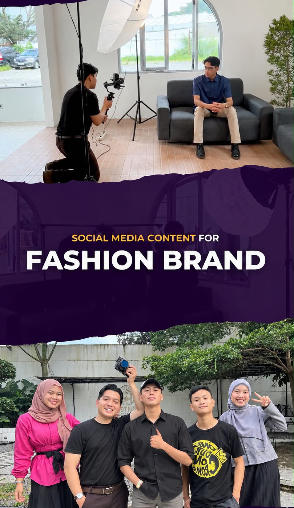
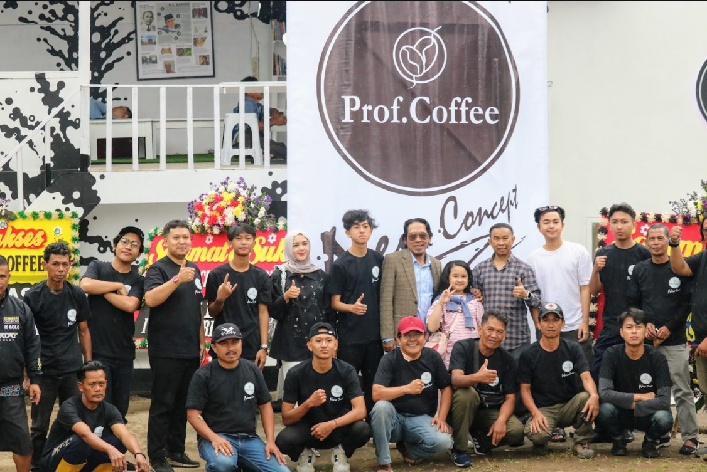
Prof Coffee Tigade
Barista & Operational Support
- Served 80–100 customers per shift in high-volume environments while maintaining top-tier hospitality and order accuracy.
- Operated POS systems, conducted accurate daily sales recapitulations, and monitored inventory.
- Actively contributed promotional ideas and event concepts to boost customer engagement and retention.
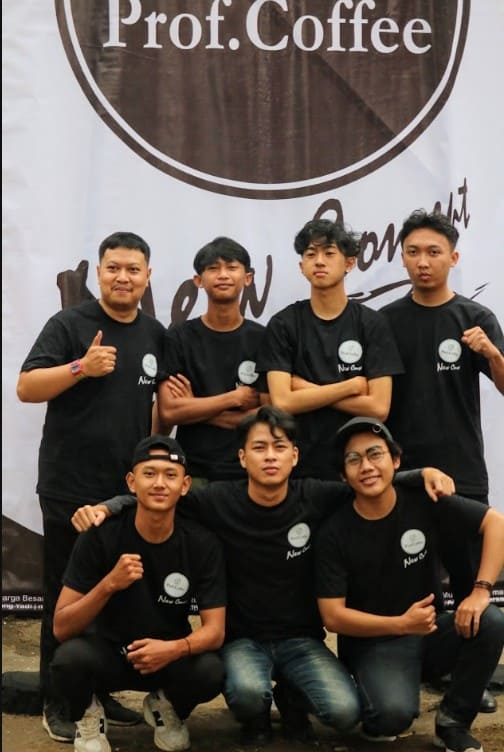
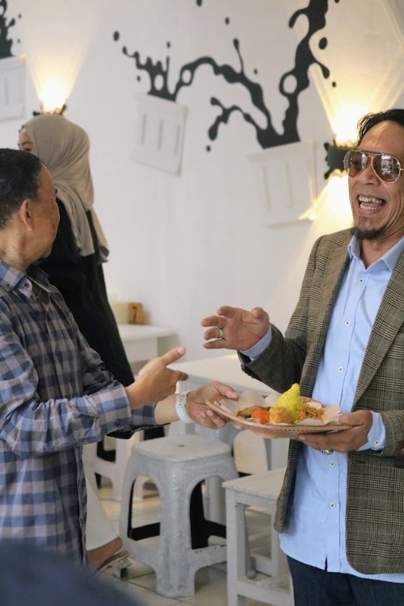
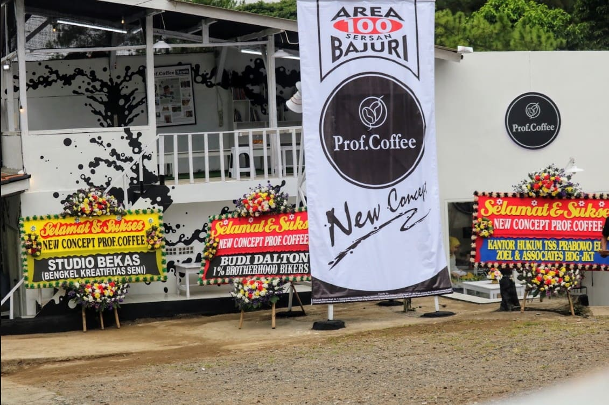
Four Points by Sheraton
F&B Banquet Intern
- Provided high-standard guest services during corporate meetings and wedding events.
- Maintained smooth coordination across international hospitality standards.
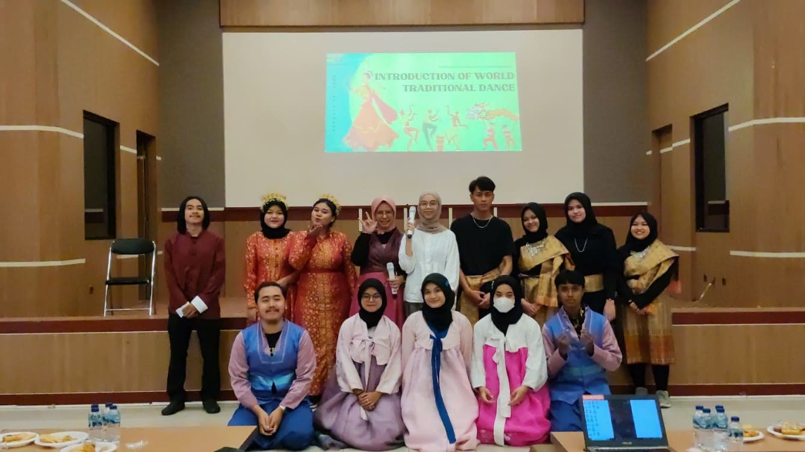
Universitas Pasundan (CCU)
Project Lead (Cross Cultural Understanding)
- Led and coordinated a 15-member team to successfully execute the Cross Cultural Understanding (CCU) cultural event.
- Managed participant administration, task delegation, and on-site problem-solving to ensure the event met its objectives.
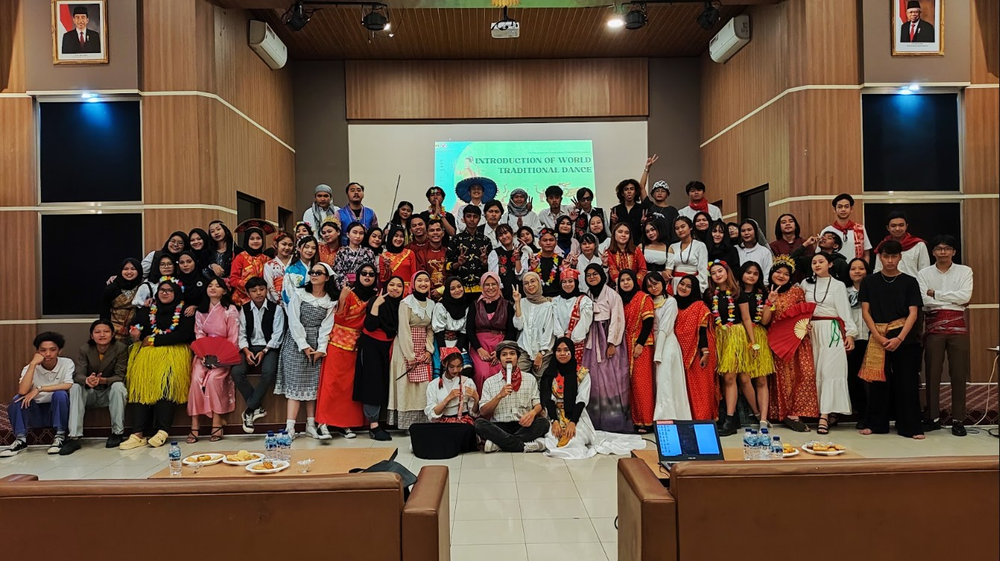
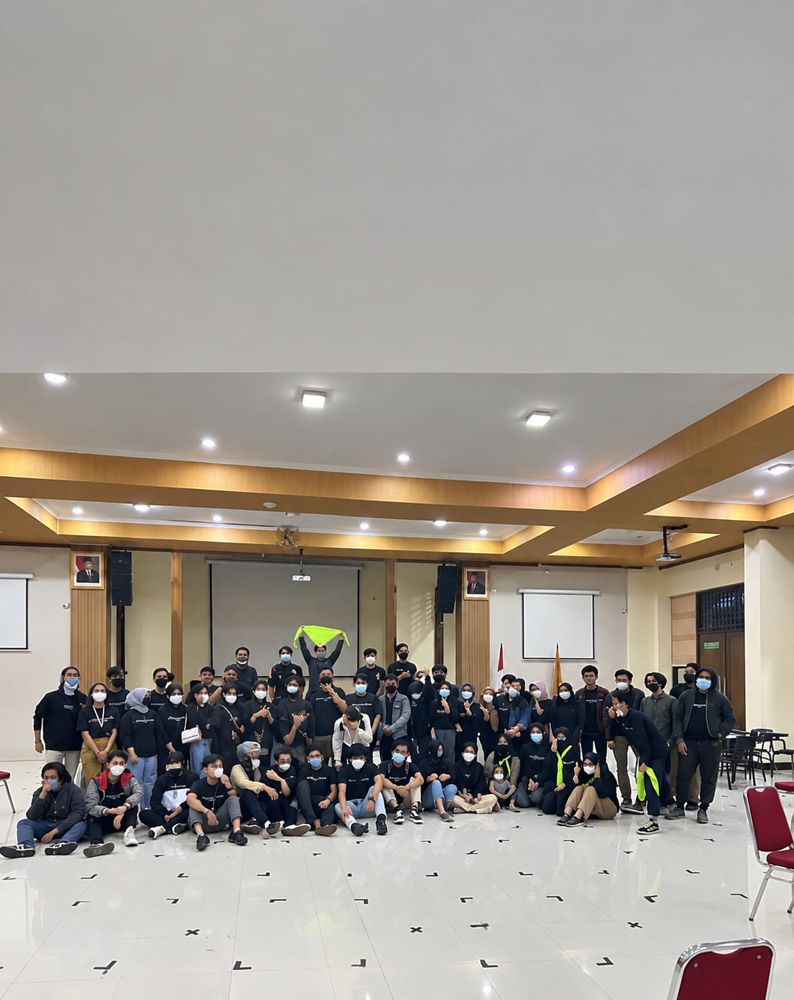
Universitas Pasundan (Vaccine)
Admin Staff (Covid-19 Vaccination)
- Verified and processed participant data accurately during the Covid-19 Vaccination Program.
- Ensured documents and data were neatly organized and coordinated with medical teams.
Educational Background
My academic journey from early education to university.
Universitas Pasundan
Bachelor of English Literature (GPA 3.30)
SMA Pasundan 1 Cimahi
Social Science Major (IPS)
SMP Negeri 10 Cimahi
Junior High School
SDN Karang Mekar Mandiri 1 Cimahi
Elementary School
Projects & Portfolio Case Studies
Featured technical web development, academic writing, and digital documentation.
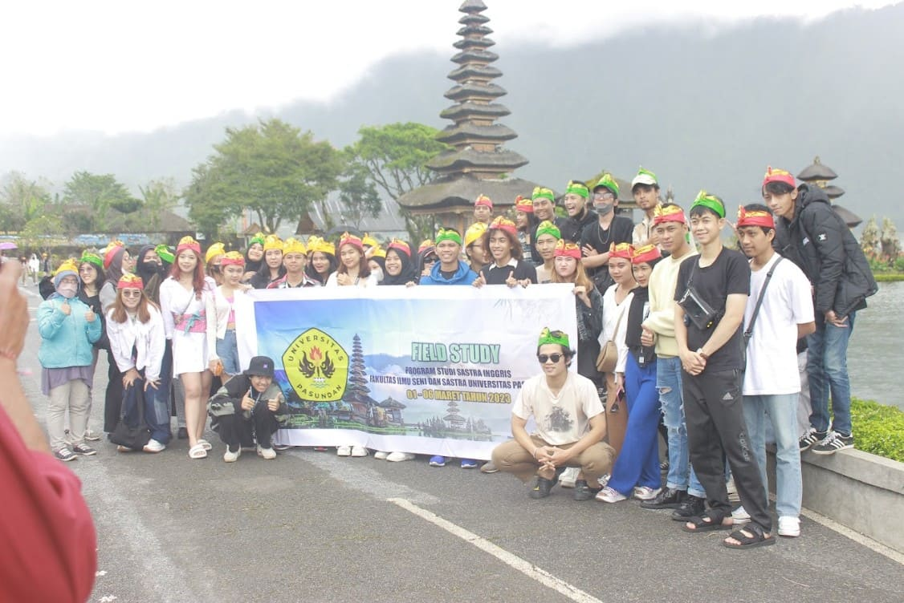
Field Study Bali
Academic field study regarding the impact of the tourism industry on socio-cultural aspects in Bali.
Prof Coffee Memories Website
An interactive HTML/CSS/JS website documenting the journey, memories, and operational dynamics while working at Prof Coffee Tigade.
Academic Journal Draft
A draft of a scientific journal in Literature/Tourism based on qualitative research.
Competencies, Tech & AI Learning
Combining soft-skills excellence with modern tech tools and AI workflows.
Customer & Client Relations
- Customer Support & Helpdesk
- Complaint Handling & Resolution
- Client Engagement & Satisfaction
- Verbal & Written Communication
Operations & Data Admin
- Daily Sales Recapitulation & Reporting
- POS & Inventory Management
- Data Entry & Processing
- Microsoft Office Suite
Technical & Web Systems
- WHMCS (Web Hosting Management)
- Virtualization & Server Basics (Proxmox, Linux, VPS)
- HTML5, CSS3, VS Code & Git/GitHub
AI Workflow & Future Interests
Actively learning to integrate AI tools for daily productivity, workflow optimization, and exploring entry-level Marketing & Client Success strategies.
Get In Touch
Feel free to connect for opportunities or collaborations.
ahmadwahdannurjaman16@gmail.com
Phone / WhatsApp
+62 831 8164 2526
Location
Cimahi, West Java, Indonesia